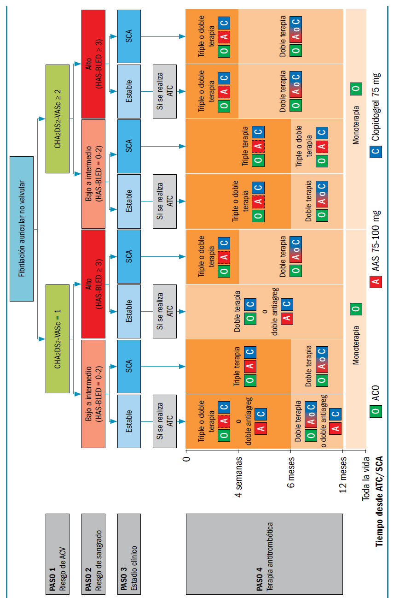

Un 80% de los pacientes con fibrilación auricular tienen indicaciones de anticoagulación y un 30% padecen una enfermedad vascular asociada que, en un 20% de los casos, requerirá una intervención en algún momento de la vida. Esos enfermos tienen indicación de continuar con la anticoagulación, lo que nos enfrenta a un problema médico de magnitud.
La Sociedades europeas involucradas han proporcionado nuevas guías de manejo de esta problemática. Sus recomendaciones se basan, en su mayoría, en recomendaciones de expertos ante la carencia de estudios aleatorizados sobre el tema. Algunos registros y estudios prospectivos ya están en marcha, pero en la actualidad el conocimiento se apoya en registros retrospectivos y en estudios con poblaciones pequeñas.
En el presente, hay varios estudios en marcha. El estudio MUSICA 2 con acenocumarol estudia la triple terapia con bajas dosis de AAS 100 mg vs. alta 300 mg en una población con puntaje CHADS2 < 2.
EL ISAR-TRIPLE estudia a pacientes con triple terapia después de la colocación de un stent DES (drug-eluting stents) comparando 6 semanas vs. 6 meses.
Por último, el registro LASER compara la triple terapia vs. la doble agregación sin anticoagulación. Las guías como forma de trabajo dividen esquemáticamente a los pacientes según el riesgo trombótico: CHA2DS2-VASc 1 o CHA2DS2-VASC 2 o mayor. Como segundo paso, categorizan el riesgo de sangrado en cada uno de los dos grupos usando el puntaje HAS-BLED de hasta 2, y otro con puntaje de 3 o mayor para agrupar por clínica de síndrome coronario agudo. Tienen indicaciones generales para el paciente anticoagulado con enfermedad coronaria estable y con el síndrome coronario agudo.
Uno de los cambios más llamativos que las diferencian de las guías norteamericanas es que adhieren al uso de stents liberadores de fármacos de última generación, que no tendrían diferencias en lo que respecta a la trombosis con los stents metálicos.
A modo de resumen, en los pacientes con alto riesgo de sangrado, independientemente del puntaje CHA2DS2-VASc, la triple terapia se mantiene durante 4 semanas.
En los pacientes con puntaje HAS-BLED menor de 2 menos luego de la colocación del stent, se sugiere mantener la triple terapia por 6 meses adaptando la conducta a los riesgos propios de cada paciente.
A partir de los 6 meses los grupos se unifican y pueden continuar con anticoagulación o doble agregación.
Se sugiere usar la escala HAS-BLED para pesquisar los factores de riesgo hemorrágico modificables. Se estipula una RIN no mayor de 2,5 y un TTR n menor de 70%. Hay que evitar el prasugrel y el ticagrelor con antiagregantes y dar preferencia al acceso radial.

Dos nuevos conceptos son volcados con indicación. Si se usan los nuevos anticoagulante orales, deben administrarse con la menor dosis recomendada para fibrilación auricular: 15 mg para el rivaroxabán y 110 mg para el dabigatrán con indicación IIb nivel de evidencia C. Con igual nivel de evidencia se indica el uso de stent DES si el paciente tiene un puntaje HAS- BLED < 2. Para la angina inestable o NSTEMI con bajo riesgo de sangrado se recomienda la intervención dentro de las 24 horas. Evitar los IIB/IIIA y no administrar PY2 hasta no determinar la anatomía continuando con la anticoagulación.
En caso de que se decida la intervención, según el fármaco y la función renal, suspender 36 a 48 horas antes.
En los pacientes con angioplastia primaria se recomienda pasara a heparina, AAS o clopidogrel. Dado el riesgo de hemorragia, se recomienda evitar los IIB/IIIA y suspender la anticoagulación oral en forma transitoria.La mayoría de estas indicaciones tienen nivel de evidencia C y la sugerencia de ser adaptadas al paciente en particular.